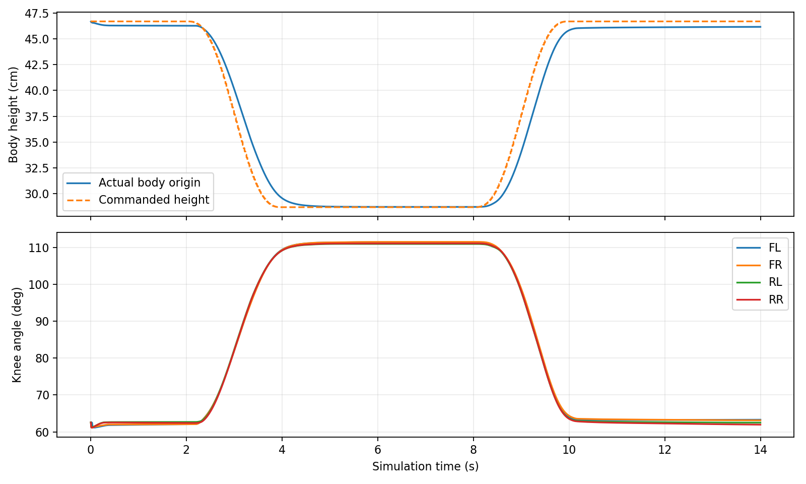

몸통 수평 유지 · 높이 감소 목표 10→18cm · 전환 목표 3→2초. Slurm 2481, compute / admin.
물리 시험 결과: PASS — 14.00s / 14s
기존10cm / 새18cm 웅크리기 비교 영상 — 다른 시험 이력을 가진 원속도 시각 비교다.
서기 46.3cm → 웅크리기 28.7cm, 실제 감소 17.6cm.
정격 RMS 초과 0/12 · 피크 제한 초과 False · 비인접 자가 접촉 최대 0.000N.

| 관절 | RMS N·m | Peak N·m | RMS 상전류 A | 정격 N·m |
|---|---|---|---|---|
| FL_HAA | 0.20 | 1.45 | 0.16 | 8.3 |
| FL_HFE | 3.82 | 4.74 | 2.66 | 18.0 |
| FL_KFE | 9.76 | 11.89 | 6.78 | 18.0 |
| FR_HAA | 0.34 | 1.77 | 0.28 | 8.3 |
| FR_HFE | 2.96 | 4.42 | 2.06 | 18.0 |
| FR_KFE | 10.50 | 12.81 | 7.29 | 18.0 |
| RL_HAA | 0.35 | 2.05 | 0.28 | 8.3 |
| RL_HFE | 2.20 | 2.68 | 1.53 | 18.0 |
| RL_KFE | 12.20 | 15.06 | 8.47 | 18.0 |
| RR_HAA | 0.44 | 2.36 | 0.35 | 8.3 |
| RR_HFE | 2.05 | 2.59 | 1.43 | 18.0 |
| RR_KFE | 12.57 | 15.58 | 8.73 | 18.0 |
전류는 기존 AK70-10 / AK10-9 KV60 V3.0 토크 상수, 효율1로 환산한 모터 상전류 추정이다. 배터리 전류·실측 전류가 아니다. 토크는 적용한 feedforward + 제한된 pre-step PD 추정이다.
원본 CAD 13강체·67convex hull, 66비인접 쌍 검사. 관절로 직접 연결된 쌍의 기존 충돌 필터를 유지했다. 200Hz 명령과 50Hz 정책은 lockstep 시뮬레이션이며 실시간 실행 성능 증명이 아니다. 기존 stop→stand 복귀 안정화와 WBC 계산 속도는 별도 과제로 남는다.
초기 후보2480은 기립 단계0.835초에 실패(자가 접촉1099.16N)했다. 측정된 대각선 두 발만 사용하는 초기 제어를 기존 네 발 기립 제어 가정으로 복원했다. 실제 네 발 접촉/자세가 준비돼야 웅크리기를 시작하는 판정은 유지했다. 실패 기록은 jobs/2480에 보존했다. 로컬135시험, 압축 해제한 번들의 native14시험과95 payload SHA를 확인했다.
initial_mode:=STAND sit_style:=deep_crouch height_drop:=0.18 posture_transition_s:=2.0
기립 상태에서 mode_request에 sit / stand를 보내 전환한다. 기존 기본값과 이전 배포 묶음은 유지했다. 새 선택 기능을 포함한 배포 묶음을 추가했다. 실제 Jetson/STM32/모터 활성화는 수행하지 않았다.